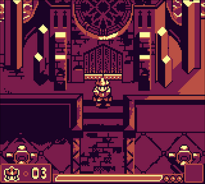
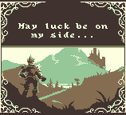
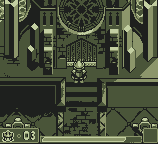
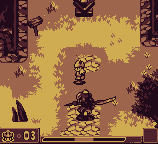

Lost Sword Citadel

STATUS: Done, but has bugs and would like to revisit
This game was made for the 9th GBJAM (Gameboy-themed gamejam), with a group of buddies I knew from my old forum-going days. We managed to get 8th place overall, with 1st place in graphics !
The game is a top-down adventure game, with combat based on elementally-infused projectiles.
The gamejam lasted one week - I programmed most of it, using Unity (I also made a couple of sprites, and one of the chiptunes). I hadn’t ever used Unity before so this was an opportunity to learn on the spot (I already had extensive experience using C#, though).
These online pals of mine made most all of the pixelart, and music - I made one track, and a couple of sprites. To be more precise, we called the team Galloway Games, in reference to an old forum we had going long ago.
You can play the game directly in your browser (or download the executable), over on the official page on itch.io
Here are some screenshots of the game:
 
And here are some GIFs roughly showing how it plays:
  
The main gameplay gimmick is that the A button shoots projectiles, and B button locks the player’s facing direction, which allows strafing. The game has 3 orbs that the player must collect, each granting him a new elemental projectile-modifying ability. These elemental effects vary as to what they do (ice slows down, fire deals plenty of damage, and lightning deals moderate damage, while periodically stunning) - these effects also spread around to nearby enemies (and to the player!).
After the gamejam, I spent a little while fixing several glaring issues with the game’s engine, though I must admit it is quite a challenge to get a nice, stable “fake 3D” engine in Unity (mostly due to how Unity handles collisions).
If I were to get back to working on this, the main idea I wanted to implement was to make the key equippable items alter how the B button works. You would start with nothing on the B button, then quickly learn the “facing-lock”. Afterwards, you could have the ability to run, to jump, to carry objects. If this idea sounds very much like a classic Zelda game, then I can only say “guilty”…